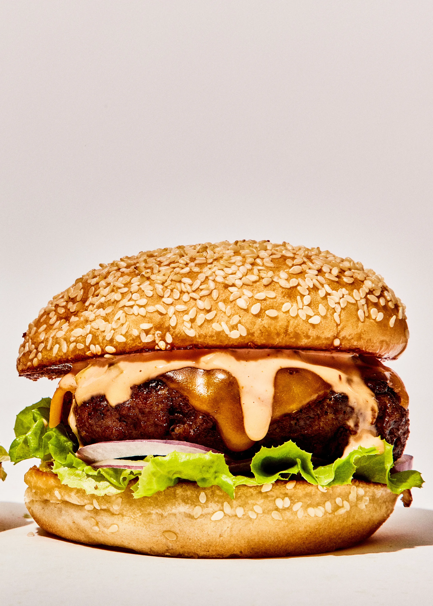

this is a recipes for burger

Description
This is my favorite recipes and my favorite resturant is Five Guys
But my wife don't like it cause its too greasy
Ingredients
- Bum
- Patty
- Letture
- Tomato
- Mayo
Stpes
- wash and prepare all produce.
- drizzle of oil, let it heat up, then cook the patty till desired
- Melt 1 TSB of butter in pan, toast the bum
- Assemble